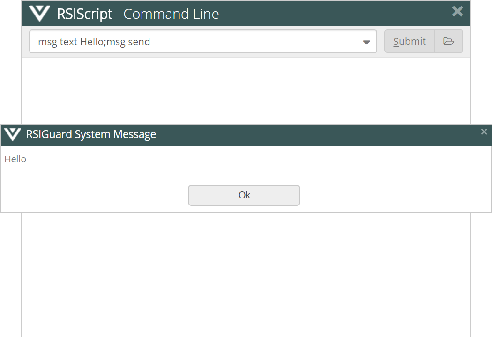

RSIGuard includes a sophisticated scripting language called RSIScript. This language is used in various ways, e.g.:
RSIScripts can be embedded in installation packages to provide a flexible way to create customized configurations that work on all supported platforms
Can be used to create scripts that can be triggered by KeyControl hotkeys to do complex sequential operations. Click here for examples
RSIScripts can be emailed or put on websites to provide custom functionality (e.g. adding a set of hotkeys or defining a work restriction)
RSIScripts allows the OES to flexibly interact with RSIGuard (e.g., via Desktop Actions or Daily Sync)
Creates a mechanism to add or change functionality to RSIGuard after deployment without modifying installed files (e.g., from Admin Console)
RSIScript works in a cross platform manner on RSIGuard for Windows and Mac. It can query the OS for information, trigger typing & mousing events, perform math, do conditional actions, interact with users, and much more. As such, RSIScript requires a basic understanding of programming principles.
How do I run an RSIScript?
The typical ways to run an RSIScript are:
Create an RSIScript using a text editor (e.g., Notepad) and assign the RSIScript file to a hotkey using KeyControl with 'Run an RSIScript'. Press the hotkey whenever you want to run the RSIScript.
Click Run RSIScript in the Tools menu and enter commands on the Command Line (Run RSIScript may only be available with administrator access at some organizations):

Click Run RSIScript in the Tools menu and click the folder icon to browse to an RSIScript file. By default, RSIScript files have the file extension '.rxs', however, '.txt' is acceptable as well.
Double click on an RSIScript file with the extension '.rxs' in Windows Explorer (assumes that .rxs is associated with RSIGuard).
Modify the .txt script files in the application folder (usually C:\Program Files (x86)\RSIGuard).